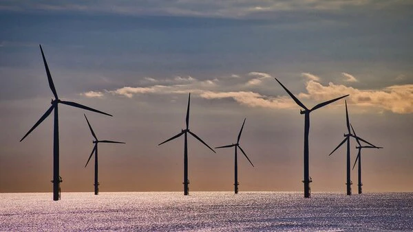
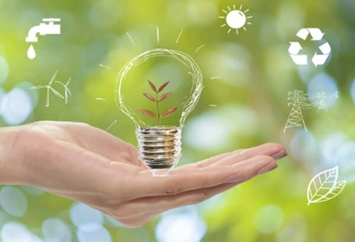
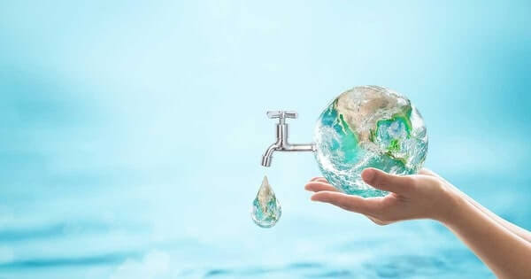

Eco Tips
Here are 5 handy eco-tips you can start using from today!
Limit Single-use Plastic and Opt for Sustainable Alternatives
You can start living a green lifestyle by taking the initiative to limit your use of single-use plastic, and actively opt for sustainable alternatives instead.
Switch to Renewable Energy Sources
Renewable energy sources are the solution for a green future. Not only are these energy sources better for the environment, but many people find that living a green lifestyle can be cheaper in the long run.
Save Energy
Another impactful and positive way to live a green lifestyle is by saving energy. By making little and manageable changes in your daily life, you can make a big difference for the planet and simultaneously save money on energy costs!
Save Water
Saving water is an encouraging way to live a green lifestyle. Not only does it help the environment, but it also saves money on your utility bills each month!
Reduce, Reuse, Recycle
Reduce, reuse, and recycle is a well-known philosophy for those living an inspiring green lifestyle. Not only does it encompass the need to reduce waste and pollution in the environment, but it may also create a more sustainable and green future for generations to come.


